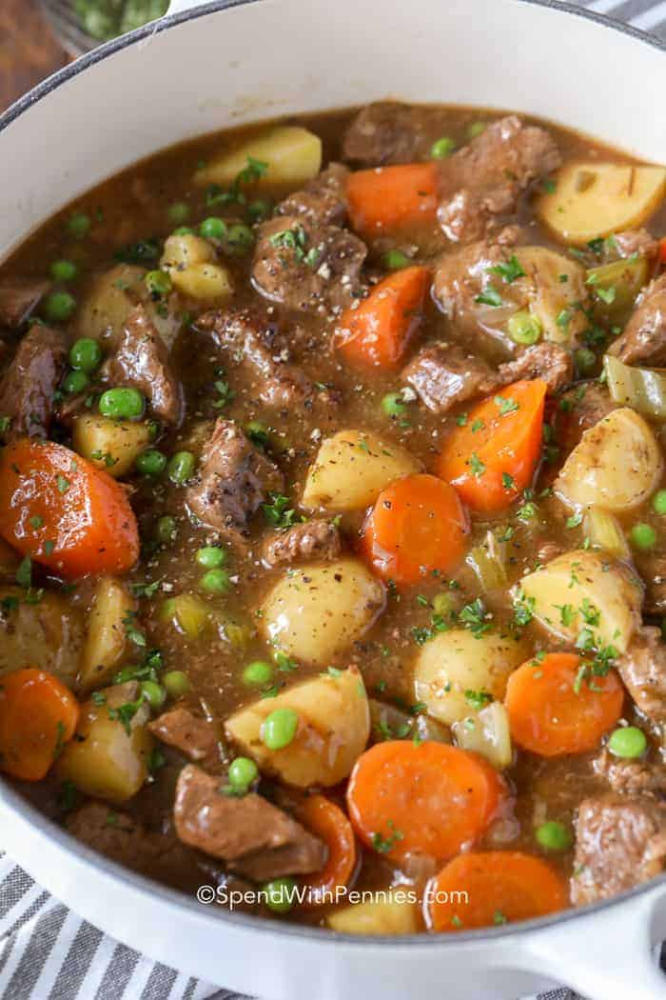

Beef Stew

Description
This Beef Stew Recipe is perfect for the colder weather! Tender beef is simmered in beef broth with potatoes, onions, celery, peas, and carrots until melt in your mouth tender. It’s comfort food heaven!
Ingredients
- 2 pounds chuck roast cubed
- 3 tablespoons all-purpose flour
- ½ teaspoon garlic powder
- ½ teaspoon salt
- ½ teaspoon black pepper
- 3 tablespoons avocado oil(or any high smoke point oil) or more as needed
- 1 onion copped
- 6 cups of beef broth
- 1 pound of potatoes peeled and cubed
- 4 carrots cut into 1 inch pieces
- 4 ribs celery cut into 1 inch pieces
- 4 ribs celery cut into 1 inch pieces
- 3 tablespoons tomato paste
- 1 fresh sprig rosemary & thyme
- 2 tablespoons cornstarch or as needed
- 2 tablespoons water or as needed
- ¾ cup peas
Recipe
- Combine flour, garlic powder, salt, and pepper. Toss beef in flour mixture.
- Heat olive oil in a large Dutch oven or pot over medium-high heat. Shake off any excess flour from the beef and brown in small batches. Remove and set aside in a bowl.
- Add the onions to the pot, adding more oil as needed, and cook until they begin to soften, about 3 minutes.
- Add beef broth while scraping up any brown bits in the pan.
- Stir in browned beef, potatoes, carrots, celery, tomato paste, and rosemary. Reduce heat to medium-low, cover, and simmer 2 hours or until beef is tender (up to 4 hours).
- Mix equal parts cornstarch and water to create a slurry. Slowly add the slurry to the boiling stew to reach desired consistency (you may not need all of the slurry, if you'd like a thicker stew, you can add extra).
- Stir in peas and simmer 5-10 minutes before serving . Season with salt & pepper to taste.
Home